사회조사분석사-2급 (2019-04-27 기출문제)
1과목: 조사방법론 I
1. 다음 사례에 내재된 연구설계의 타당성 저해요인이 아닌 것은?
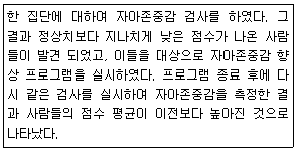
- 시험효과(testing effect)
- 도구효과(instrumentation)
- 통계적 회귀(statistical regression)
- 성숙효과(maturation effect)
(정답률: 52%)

2. 온라인 조사의 장점이 아닌 것은?
- 멀티미디어의 장점을 활용할 수 있다.
- 짧은 기간에 많은 응답자들을 조사할 수 있다.
- 조사대상에 대한 높은 대표성을 확보할 수 있다.
- 오프라인 조사에 비해 비교적 저렴한 비용으로 실시할 수 있다.
(정답률: 90%)
3. 가설에 관한 설명으로 틀린 것은?
- 가설은 다른 가설이나 이론과 독립적이어야 한다.
- 두 변수 이상의 변수 간 관련성이나 영향관계에 관한 진술형 문장이다.
- 연구문제에 관한 구체적이고 검증 가능한 기대이다.
- 과학적 방법에 의해 사실 혹은 거짓 중의 하나로 판명될 수 있다.
(정답률: 76%)
4. 다음 중 작업가설로 가장 적합한 것은?
- 한국사회는 양극화되고 있다.
- 대학생들은 독서를 많이 해야 한다.
- 경제성장은 사회혼란을 심화시킬 수 있다.
- 소득수준이 높아질수록 생활에 대한 만족도는 높아진다.
(정답률: 82%)
5. 다음 설명에 해당하는 자료수집 방법은?
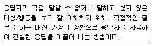
- 투사법(projective method)
- 정보검사법(information test)
- 오진선택법(error-choice method)
- 표적집단면접법(focus group interview)
(정답률: 88%)
6. 과학적 연구방법의 특징에 관한 설명으로 틀린 것은?
- 과학적 연구는 논리적 사고에 의존한다.
- 과학적 진실의 현실적합성을 높이기 위하여 가급적 많은 자료와 변수를 포함하는 것이 좋다.
- 과학적 현상은 스스로 발생하는 것이 아니라 어떤 원인이 있는 것이며, 그 원인은 논리적으로 확인될 수 있는 것이다.
- 사회과학분야 연구에서의 과학성은 연구자들이 공통적으로 가지는 주관성(inter-subjectivity)에 근거하는 경우가 많다.
(정답률: 50%)
7. 과학적 연구의 논리체계에 관한 설명으로 틀린 것은?
- 사회과학 이론과 연구는 연역과 귀납의 방법을 통해 연결된다.
- 연역은 이론으로부터 기대 또는 가설을 이끌어내는 것이다.
- 귀납은 구체적인 관찰로부터 일반화로 나아가는 것이다.
- 귀납적 논리의 고전적인 예는 “모든 사람은 죽는다. 소크라테스는 사람이다. 따라서 소크라테스는 죽는다.”이다.
(정답률: 78%)
8. 자신의 신분을 밝히지 않은 채 자연스럽게 일어나는 사회적 과정에 참여하는 관찰자의 역할은?
- 완전참여자
- 완전관찰자
- 참여자적 관찰자
- 관찰자적 참여자
(정답률: 66%)
9. 조사연구의 목적과 그 예가 틀리게 짝지어진 것은?
- 기술(description)-유권자들의 대선후보 지지율 조사
- 탐색(exploration)-단일사례설계를 통하여 개입의 효과를 검증하려는 연구
- 설명(explanation)-시민들이 왜 담배값 인상에 반대하는지 파악하고자 하는 연구
- 평가(evaluation)-현재의 공공의료정책이 1인당 국민 의료비를 증가시켰는지에 대한 연구
(정답률: 58%)
10. 다음 ()에 알맞은 것은?
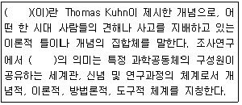
- 패러다임(paradigm)
- 명제(proposition)
- 법칙(law)
- 공리(axioms)
(정답률: 81%)
11. 우편조사, 전화조사, 대면면접조사에 관한 비교설명으로 옳은 것은?
- 우편조사의 응답률이 가장 높다.
- 대면면접조사에서는 추가질문하기가 가장 어렵다.
- 우편조사와 전화조사는 자기기입식 자료수집 방법이다.
- 어린이나 노인에게는 대면면접조사가 가장 적절하다.
(정답률: 79%)
12. 기술조사에 적합한 조사주제를 모두 고른 것은?
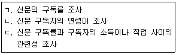
- ㄱ, ㄴ
- ㄴ, ㄷ
- ㄱ, ㄷ
- ㄱ, ㄴ, ㄷ
(정답률: 57%)
13. 질문지 개별 항목의 내용결정 시 고려해야 할 사항으로 옳지 않은 것은?
- 응답 항목들 간의 내용이 중복되어서는 안 된다.
- 가능한 한 쉽고 의미가 명확하게 구분되는 단어를 사용해야 한다.
- 연구자가 임의로 응답자에 대한 가정을 해서는 안 된다.
- 하나의 항목으로 두 가지 이상의 질문을 하여 최대한 문항수를 줄어야 한다.
(정답률: 86%)
14. 다음 질문항목의 문제점으로 가장 적합한 것은?
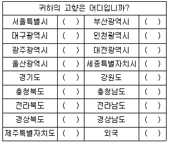
- 간결성 결여
- 명확성 결여
- 포괄성 결여
- 상호배제성 결여
(정답률: 60%)
15. 온라인 조사방법에 해당하지 않는 것은?
- 전자우편조사(e-mail survey)
- 웹조사(HTML form survey)
- 데이터베이스조사(database survey)
- 다운로드조사(downloadable
(정답률: 67%)
16. 다음 사례에서 영향을 미칠 수 있는 대표적인 타당성 저해요인은?
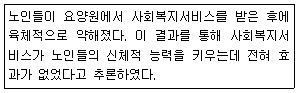
- 우연적 사건(history)
- 시험효과(testing effect)
- 성숙효과(maturation effect)
- 도구효과(instrumentation)
(정답률: 65%)
17. 양적 연구와 질적 연구를 통합한 혼합연구방법(mixed method)에 관한 내용으로 틀린 것은?
- 다양한 패러다임을 수용할 수 있어야 한다.
- 질적 연구결과에서 양적 연구가 시작될 수 없다.
- 질적 연구결과와 양적 연구결과는 상반될 수 있다.
- 주제에 따라 두 가지 연구방법의 비중은 상이할 수 있다.
(정답률: 78%)
18. 다음 ()에 알맞은 조사방법으로 옳은 것은?
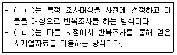
- ㄱ:패널조사, ㄴ:횡단조사
- ㄱ:패널조사, ㄴ:추세조사
- ㄱ:횡단조사, ㄴ:추세조사
- ㄱ:전문가조사, ㄴ:횡단조사
(정답률: 74%)
19. 과학적 연구의 과정을 바르게 나열한 것은?
- 이론→관찰→가설→경험적 일반화
- 이론→가설→관찰→경험적 일반화
- 이론→경험적 일반화→가설→관찰
- 관찰→경험적 일반화→가설→이론
(정답률: 76%)
20. 표적집단면접법(focus group interview)에 관한 설명으로 가장 적합한 것은?
- 전문적인 지식을 가진 집단으로 하여금 특정한 주제에 대하여 자유롭게 토론하도록 한 다음, 이 과정에서 필요한 정보를 추출하는 방법이다.
- 응답자가 조사의 목적을 모르는 상태에서 다양한 심리적 의사소통법을 이용하여 자료를 수집하는 방법이다.
- 조사자가 한 단어를 제시하고 응답자가 그 단어로부터 연상되는 단어들을 순서대로 나열하도록 하여 조사하는 방법이다.
- 응답자에게 이해하기 난해한 그림을 제시한 다음, 그 그림이 무엇을 묘사하는지 물어 응답자의 심리 상태를 파악하는 방법이다.
(정답률: 78%)
21. 조사자가 필요로 하는 자료를 1차 자료와 2차 자료로 구분할 때 1차 자료에 대한 설명으로 옳지 않은 것은?
- 조사목적에 적합한 정보를 필요한 시기에 제공한다.
- 자료 수집에 인력과 시간, 비용이 많이 소요된다.
- 현재 수행 중인 의사 결정 문제를 해결하기 위해 직접 수집한 자료이다.
- 1차 자료를 얻은 후 조사목적과 일치하는 2차 자료의 존재 및 사용가능성을 확인하는 것이 경제적이다.
(정답률: 70%)
22. 면접법의 장점으로 틀린 것은?
- 관찰을 병행할 수 있다.
- 신축성 있게 자료를 얻을 수 있다.
- 질문순서, 정보의 흐름을 통제할 수 있다.
- 익명성이 높아 솔직한 의견을 들을 수 있다.
(정답률: 86%)
23. 다음 연구의 진행에 있어 내적 타당성을 위협하는 요인이 아닌 것은?
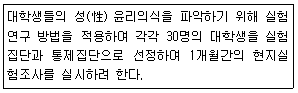
- 우연적 사건(history)
- 표본의 편중(selection bias)
- 측정수단의 변화(instrumentation)
- 실험변수의 확산 또는 모방(diffusion or imitation of treatments)
(정답률: 37%)
24. 질적연구에 관한 설명과 가장 거리가 먼 것은?
- 질적연구에서는 어떤 현상에 대해 깊은 이해를 하고 주관적인 의미를 찾고자 한다.
- 질적연구는 개별 사례 과정과 결과의 의미, 사회적 맥락을 규명하고자 한다.
- 질적연구는 양적연구에 비해 대상자를 정확히 이해할 수 있는 더 나은 연구방법이다.
- 연구주제에 따라서는 질적연구와 양적연구를 동시에 진행할 수 있다.
(정답률: 69%)
25. 실험설계에 대한 설명으로 틀린 것은?
- 실험의 검증력을 극대화 시키고자 하는 시도이다.
- 연구가설의 진위여부를 확인하는 구조화된 절차이다.
- 실험의 내적 타당도를 확보하기 위한 노력이다.
- 조작적 상황을 최대한 배제하고 자연적 상황을 유지해야하는 표준화된 절차이다.
(정답률: 78%)
26. 응답자에게 면접조사에 참여하고자 하는 동기를 부여하는 요인과 가장 거리가 먼 것은?
- 면접자를 돕고 싶은 이타적 충동
- 물질적 보상과 같은 혜택에 대한 기대
- 사생활 침해에 대한 오인과 자기방어 욕구
- 자신의 의견이나 식견을 표현하고 싶은 욕망
(정답률: 84%)
27. 사회조사 시 수집한 자료를 편집, 정정, 보완하거나 필요에 따라서 삭제하여야 할 필요성이 생겨나는 단계는?
- 문제설정단계(Problem statement stage)
- 자료수집단계(Data collection stage)
- 자료분석단계(Data analysis stage)
- 예비검사단계(Pilot test stage)
(정답률: 73%)
28. 패널(panel) 조사의 특징과 가장 거리가 먼 것은?
- 패널조사는 측정기간 동안 패널이 이탈될 수 있는 단점이 있다.
- 패널조사는 조사대상자로부터 추가적인 자료를 얻기가 비교적 쉽다.
- 패널조사는 조사대상자의 태도 및 행동변화에 대한 분석이 가능하다.
- 패널조사는 최초 패널을 다소 잘못 구성하더라도 장기간에 걸쳐 수정이 가능하다는 장점이 있다.
(정답률: 80%)
29. 다음 중 질문지의 구성요소로 볼 수 없는 것은?
- 식별자료
- 지시사항
- 필요정보 수집을 위한 문항
- 응답에 대한 강제적 참여 조항
(정답률: 83%)
30. 변수사이의 관계에 대한 설명으로 옳은 것은?
- X가 Y보다 논리적으로 선행하고 두 변수가 높은 상관을 보이면, 두 변수 X와 Y가 인과관계가 있다고 결론짓는다.
- X와 Y의 상관계수(피어슨의 상관계수)가 0이면, 두 변수 간에는 아무런 관계가 존재하지 않는다고 결론짓는다.
- X와 Y가 실제로는 정(positive)의 관계를 가지면서도, 상관계수는 부(negative)의 관계로 나타날 수 있다.
- X와 Y 사이에 매개변수가 있을 경우, X와 Y 사이에는 인과관계가 존재하지 않는다.
(정답률: 39%)
2과목: 조사방법론 II
31. 어의차이척도(semantic differential scale)에 관한 설명으로 옳지 않은 것은?
- 측정된 자료는 요인분석 등과 같은 다변량분석의 적용이 가능하다.
- 측정대상들을 직접 비교하는 형태인 비교척도(comparative scale)에 해당한다.
- 마케팅조사에서 기업이나 브랜드, 광고에 대한 이미지, 태도 등의 방향과 정도를 알기 위해 널리 이용된다.
- 일련의 대립되는 양극의 형용사로 구성된 척도를 이용하여 응답자의 감정 혹은 태도를 측정하는데 이용된다.
(정답률: 44%)
32. 측정의 수준이 바르게 짝지어진 것은?
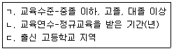
- ㄱ:명목측정, ㄴ:서열측정, ㄷ:등간측정
- ㄱ:등간측정, ㄴ:서열측정, ㄷ:비율측정
- ㄱ:서열측정, ㄴ:등간측정, ㄷ:명목측정
- ㄱ:서열측정, ㄴ:비율측정, ㄷ:명목측정
(정답률: 66%)
33. 다음 중 확률표집에 해당하는 것은?
- 할당표집(quota sampling)
- 판단표집(judgement sampling)
- 편의표집(convenience sampling)
- 단순무작위표집(simple random sampling)
(정답률: 78%)
34. 개념이 사회과학 및 기타 조사방법에 기여하는 역할과 가장 거리가 먼 것은?
- 개념은 연역적 결과를 가져다 준다.
- 조사연구에 있어 주요 개념은 연구의 출발점을 가르쳐 준다.
- 개념은 언어나 기호로 나타내어 지식의 축적과 확장을 가능하게 해준다.
- 인간의 감각에 의해 감지될 수 있는 현상에 대해서만 이해할 수 있는 방법을 제시해 준다.
(정답률: 76%)
35. 다음 중 단순무작위표집을 통하여 자료를 수집하기 어려운 조사는?
- 신용카드 이용자의 불편사항
- 조세제도 개혁에 대한 중산층의 찬반 태도
- 새 입시제도에 대한 고등학생의 찬반 태도
- 국가기술자격 시험문제에 대한 시험응시자의 만족도
(정답률: 63%)
36. 다음과 같이 양극단의 상반된 수식어 대신 하나의 수식어(unpolar adjective)만을 평가기준으로 제시하는 척도는?
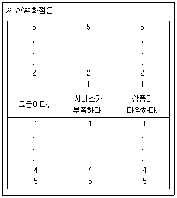
- 스타펠척도(stapel scale)
- 리커트척도(likert scale)
- 거트만척도(guttman scale)
- 서스톤척도(thurstone scale)
(정답률: 52%)
37. 표집구간 내에서 첫 번째 번호만 무작위로 뽑고 다음부터는 매 k번째 요소를 표본으로 선정하는 표집방법은?
- 계통표집
- 층화표집
- 집락표집
- 단순무작위표집
(정답률: 73%)
38. 신뢰성에 대한 설명으로 옳지 않은 것은?
- 측정하고자 하는 개념을 정확히 측정했는지를 의미한다.
- 측정된 결과치의 일관성, 정확성, 예측가능성과 관련된 개념이다.
- 신뢰성 측정법에는 재검사법, 복수양식법, 반분법 등이 있다.
- 측정값들 간에 비체계적 오차가 적으면 신뢰성이 높은 측정 결과이다.
(정답률: 69%)
39. 개념타당성(construct validity)에 관한 옳은 설명을 모두 고른 것은?
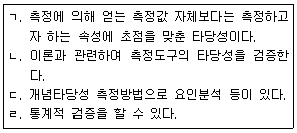
- ㄱ, ㄹ
- ㄴ, ㄷ, ㄹ
- ㄱ, ㄴ, ㄷ
- ㄱ, ㄴ, ㄷ, ㄹ
(정답률: 54%)
40. 표본추출(sampling)에 대한 설명으로 틀린 것은?
- 표본을 추출할 때는 모집단을 분명하게 정의하는 것이 중요하다.
- 표본추출이란 모집단(population)에서 표본을 선택하는 행위를 말한다.
- 확률표본추출을 할 경우 표본오차는 없으나 비표본오차는 발생할 수 있다.
- 일반적으로 표본이 모집단을 잘 대표하기 위해서는 가능한 확률표본추출을 하는 것이 바람직하다.
(정답률: 76%)
41. 표본추출에 관한 설명으로 옳은 것은?
- 분석단위와 관찰단위는 항상 일치한다.
- 표본추출요소는 자료가 수집되는 대상의 단위이다.
- 통계치는 모집단의 특정변수가 갖고 있는 특성을 요약한 값이다.
- 표본추출단위는 표본이 실제 추출되는 연구대상 목록이다.
(정답률: 32%)
42. 측정의 신뢰도와 타당도에 관한 설명으로 옳은 것은?
- 동일인이 한 체중계로 여러 번 몸무게를 측정 하는 것은 체중계의 타당도와 관련되어 있다.
- 측정도구의 높은 신뢰성이 측정의 타당성을 보증하지 않는다.
- 측정도구의 타당도를 검사하기 위해 반분법을 활용한다.
- 기준관련 타당도는 측정도구의 대표성에 관한 것이다.
(정답률: 69%)
43. 다음 사례추출방법은?
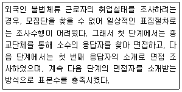
- 할당표집(quota sampling)
- 군집표집(cluster sampling)
- 편의표집(convenience sampling)
- 눈덩이표집(snowball sampling)
(정답률: 79%)
44. 토익점수와 실제 영어회화와의 관련성을 분석한 결과, 토익점수가 높다고 해서 영어회화를 잘한다는 가설에 대한 통계적 유의성은 없었다고 가정하면 토익점수라는 측정도구에는 어떤 문제가 있는가?
- 신뢰도
- 타당도
- 유의도
- 내적일관성
(정답률: 66%)
45. 사회조사에서 어떤 태도를 측정하기 위해 단일지표보다 여러 개의 지표를 사용하는 경우가 많은 이유로 볼 수 없는 것은?
- 신뢰도를 높이기 위해
- 타당도를 높이기 위해
- 내적일관성을 높이기 위해
- 측정도구의 안정성을 높이기 위해
(정답률: 44%)
46. 설문에 응한 응답자들을 가구당 소득에 따라 100만원 이하, 100만~200만원, 200만~300만원, 300만원 이상 등 네 개의 집단으로 구분하였다면 어떤 문제가 발생하는가?
- 순환성
- 포괄성
- 신뢰성
- 상호배타성
(정답률: 63%)
47. 각 문항이 척도상의 어디에 위치할 것인가를 평가자들로 하여금 판단케 한 다음 조사자가 이를 바탕으로 하여 대표적인 문항들을 선정하여 척도를 구성하는 방법은?
- 서스톤척도
- 리커트척도
- 거트만척도
- 의미분화척도
(정답률: 53%)
48. 연속변수(continuous variable)로 구성하기 어려운 것은?
- 인종
- 소득
- 범죄율
- 거주기간
(정답률: 77%)
49. 다음 ()에 공통으로 들어갈 변수는?
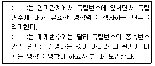
- 선행변수
- 구성변수
- 조절변수
- 왜생변수
(정답률: 69%)
50. 다음 중 표집방법에 관한 설명으로 틀린 것은?
- 편의표집(convenience sampling)은 표본의 대표성을 확보하기 어렵다.
- 할당표집(quota sampling)에서는 조사결과의 오차 범위를 계산할 수 있다.
- 확률표집과 비확률표집의 차이는 무작위 표집 절차 사용여부에 의해 결정된다.
- 층화표집(stratified sampling)에서는 모집단이 의미 있는 특징에 의하여 소집단으로 분할된다.
(정답률: 61%)
51. 판단표집(judgment sampling)에 대한 설명으로 가장 거리가 먼 것은?
- 비확률표본추출법에 해당한다.
- 연구자의 주관적인 판단에 의한 표집이다.
- 모집단이 크면 클수록 연구자가 표본에 대한 정확한 정보를 얻기 쉽다.
- 연구자가 모집단과 그 구성요소에 대한 풍부한 사전지식을 갖고 있어야 한다.
(정답률: 68%)
52. 측정 오차(measurement error)의 종류 중 측정 상황, 측정 과정, 측정 대상 등에서 우연적이며 가변적인 일시적 형편에 의해 측정 결과에 대한 영향을 미치는 오차는?
- 계량적 오차
- 작위적 오차
- 체계적 오차
- 무작위적 오차
(정답률: 66%)
53. 다음 ()에 공통적으로 알맞은 것은?
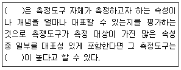
- 내용타당성(content validity)
- 개념타당성(construct validity)
- 집중타당성(convergent validity)
- 이해타당성(nomological validity)
(정답률: 52%)
54. 우리나라 고등학생 집단을 학년과 성별, 계열별(인문계, 자연계, 예체능계)로 구분하여 할당 표본추출을 할 경우 총 몇 개의 범주로 구분되는가?
- 6개
- 12개
- 18개
- 24개
(정답률: 72%)
55. 다음은 어떤 변수에 대한 설명인가?
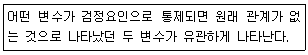
- 예측변수
- 왜곡변수
- 억제변수
- 종속변수
(정답률: 61%)
56. 다음 중 성인에 대한 우울증 검사도구를 청소년들에게 그대로 작용할 때 가장 우려되는 측정오차는?
- 고정반응
- 문화적 차이
- 무작위 오류
- 사회적 바람직성
(정답률: 70%)
57. 다음 중 표집틀(sampling frame)이 모집단(population)보다 큰 경우는?
- 한국대학교 학생을 한국대학교 학생등록부를 이용해서 표집하는 경우
- 한국대학교 학생을 교문 앞에서 임의로 표집하는 경우
- 한국대학교 학생을 서울지역 휴대폰 가입자 명부를 이용해서 표집하는 경우
- 한국대학교의 체육과 학생을 한국대학교 학생등록부를 이용해서 표집하는 경우
(정답률: 49%)
58. 측정의 개념에 대한 옳은 설명을 모두 고른 것은?
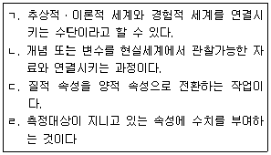
- ㄱ, ㄴ, ㄷ
- ㄱ, ㄴ, ㄹ
- ㄷ, ㄹ
- ㄱ, ㄴ, ㄷ, ㄹ
(정답률: 61%)
59. 보가더스(Bogardus)의 사회적 거리척도의 특징으로 옳지 않은 것은?
- 적용 범위가 넓고 예비조사에 적합한 면이 있다.
- 집단 상호간의 거리를 측정하는 데 유용하다.
- 신뢰성 측정에는 양분법이나 복수양식법이 매우 효과적이다.
- 집단뿐 아니라 개인 또는 추상적인 가치에 관해서도 적용할 수 있다.
(정답률: 35%)
60. 모집단 전체의 특성치를 요약한 수치를 뜻하는 용어는?
- 평균(mean)
- 모수(parameter)
- 통계치(statistics)
- 표집틀(sampling frame)
(정답률: 64%)
3과목: 사회통계
61. 상관분석 및 회귀분석을 실시할 때의 설명으로 틀린 것은?
- 연구자는 먼저 설명변수와 반응변수의 산점도를 그려서 관계를 파악해보아야 한다.
- 두 변수간의 관계가 선형이 아니라면, 관련이 있어도 상관계수가 0이 될 수 있다.
- 상관계수가 +1에 가까우면 높은 상관이 있는 것이고, -1에 가까우면 상관이 없는 것으로 해석할 수 있다.
- 두 개의 설명변수가 있을 때 다중회귀분석을 실시한 경우의 회귀계수와 각각 단순회귀분석을 했을 때의 회귀계수는 달라진다.
(정답률: 58%)
62. 단순회귀분석에서 회귀직선의 추정식이
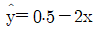
와 같이 주어졌을 때 다음 설명 중 틀린 것은?- 반응변수는 y이고 설명변수는 x이다.
- 반응변수와 설명변수의 상관계수는 0.5이다.
- 설명변수가 0일 때 반응변수가 기본적으로 갖는 값은 0.5이다.
- 설명변수가 한 단위 증가할 때 반응변수는 평균적으로 2단위 감소한다.
(정답률: 59%)
63. A도시에서는 실업률이 5.5% 라고 발표하였다. 그러나 관련민간단체에서는 실업률 5.5%는 너무 낮게 추정된 값이라고 여겨 이를 확인하고자 노동력 인구 중 520명을 임의로 추출하여 조사한 결과 39명이 무직임을 알게 되었다. 이를 확인하기 위한 검정을 수행할 때 검정통계량의 값은?
- -2.58
- 1.75
- 1.96
- 2.00
(정답률: 28%)
64. 다음 통계량 중 그 성질이 다른 것은?
- 분산
- 상관계수
- 사분위간 범위
- 변이(변동)계수
(정답률: 43%)
65. 구간 [0, 1]에서 연속인 확률변수 X의 확률누적분포함수가 F(x)=x일 때, X의 평균은?
- 1/3
- 1/2
- 1
- 2
(정답률: 56%)
66. 검정력(power)에 대한 설명으로 옳은 것은?
- 참인 귀무가설을 채택할 확률이다.
- 거짓인 귀무가설을 채택할 확률이다.
- 귀무가설이 참임에도 불구하고 이를 기각시킬 확률이다.
- 대립가설이 참일 때 귀무가설을 기각시킬 확률이다.
(정답률: 53%)
67. 다음의 자료로 줄기-잎 그림을 그리고 중앙값을 찾아보려 한다. 빈 칸에 들어갈 잎과 중앙값을 순서대로 바르게 나열한 것은?
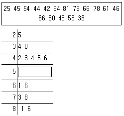
- 0 3, 중앙값=46
- 0 3 4, 중앙값=50
- 0 0 3, 중앙값=50
- 3 4 4, 중앙값=53
(정답률: 72%)
68. 회귀분석에서의 결정계수에 관한 설명으로 틀린 것은?
- 결정계수 r2의 범위는 0≤r2≤1이다.
- 종속변수의 총변동 중 회귀직선에 기인한 변동의 비율을 나타낸다.
- 결정계수는 잔차제콥합(SSE)을 총제곱합(SST)으로 나눈 값이다.
- 단순회귀분석의 경우 종속변수와 독립변수의 상관계수를 제곱한 값이 결정계수이다.
(정답률: 56%)
69. 통계조사 시 한 가구를 조사하는데 소요되는 시간을 측정하기 위하여 64가구를 임의 추출하여 조사한 결과 평균 소요시간이 30분, 표준편차 5분이었다. 한 가구를 조사하는데 소요되는 평균시간에 대한 95%의 신뢰구간 하한과 상한은 각각 얼마인가? (단, Z0.025=1.96, Z0.⑤=1.645)
- 28.8, 31.2
- 28.4, 31.6
- 29.0, 31.0
- 28.5, 31.5
(정답률: 51%)
70. 20대 성인 여자의 키의 분포가 정규분포를 따르고 평균값은 160cm이고 표준편차는 10cm라고 할 때, 임의의 여자의 키가 175cm보다 클 확률은 얼마인가? (단, 다음 표준정규분포의 누적확률표 표참고)
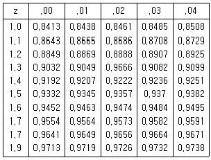
- 0.0668
- 0.0655
- 0.9332
- 0.9345
(정답률: 39%)
71. 다음은 k개의 처리효과를 비교하기 위한 일원배치법에서,ｉ-번째 처리에서 얻은 j-번째 관측값 Yij(i=1,ㆍㆍㆍ, k, j=1, ㆍㆍㆍ, n)에 대한 모형이다. 다음 중 오차항 ϵij에 대한 가정이 아닌 것은?
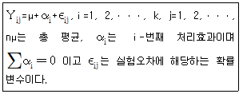
- ϵij는 정규분포를 따른다.
- ϵij 사이에 자기상관이 존재한다.
- 모든 ｉ, j에 대하여 ϵij의 분산은 동일하다.
- 모든 ｉ, j에 대하여 ϵij는 서로 독립이다.
(정답률: 52%)
72. 정규모집단으로부터 뽑은 확률표본 X1, X2, X3가 주어졌을 때, 모집단의 평균에 대한 추정량으로 다음을 고려할 때 옳은 설명은? (단, X1, X2, X3의 관측값은 2, 3, 4이다.)
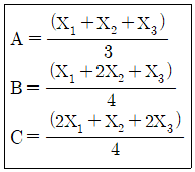
- A, B, C 중에 유일한 불편추정량은 A이다.
- A, B, C 중에 분산이 가장 작은 추정량은 A이다.
- B는 편향(bias)이 존재하는 추정량이다.
- 불편성과 최소분산성의 관점에서 가장 선호되는 추정량은 B이다.
(정답률: 40%)
73. “성과 정당지지도 사이에 관계가 있는가?”를 살펴보기 위하여 설문조사 실시, 분석한 결과 Pearson 카이제곱 값이 32.29, 자유도가 1, 유의확률이 0.000 이었다. 이 분석에 근거할 때, 유의수준 0.⑤에서 “성과 정당지지도 사이의 관계”에 대한 결론은?
- 정당의 종류는 2가지이다.
- 성과 정당지지도 사이에 유의미한 관계가 있다.
- 성과 정당지지도 사이에 유의미한 관계가 없다.
- 위에 제시한 통계량으로는 성과 정당지지도 사이의 관계를 알 수 없다.
(정답률: 52%)
74. 다음 설명 중 틀린 것은?
- 사건 A와 B가 배반사건이면 P(A∪B)=P(A)+P(B)이다.
- 사건 A와 B가 독립사건이면 P(A∩B)=P(A)ㆍP(B)이다.
- 5개의 서로 다른 종류 물건에서 3개를 복원추출하는 경우의 가지 수는 60가지이다.
- 붉은색 구슬이 2개, 흰색 구슬이 3개, 모두 5개의 구슬이 들어 있는 항아리에서 임의로 2개의 구슬을 동시에 꺼낼 때, 꺼낸 구슬이 모두 붉은색일 확률은 1/10이다.
(정답률: 50%)
75. 통계적 가설의 기각여부를 판정하는 가설검정에 대한 설명으로 옳은 것은?
- 표본으로부터 확실한 근거에 의하여 입증하고자 하는 가설을 귀무가설이라 한다.
- 유의수준은 제2종 오류를 범할 확률의 최대허용한계이다.
- 대립가설을 채택하게 하는 검정통계량의 영역을 채택역이라 한다.
- 대립가설이 옳은데도 귀무가설을 채택함으로써 범하게 되는 오류를 제2종 오류라 한다.
(정답률: 59%)
76. 다음과 같은 자료가 주어져 있다. 최소제곱법에 의한 회귀직선은?
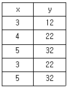
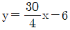
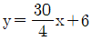
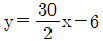
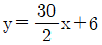
(정답률: 41%)
77. 다음 중 평균에 관한 설명으로 틀린 것은?
- 중심결향을 측정하기 위한 척도이다.
- 이상치에 크게 영향을 받는 단점이 있다.
- 이상치가 존재할 경우를 고려하여 절사평균(trimmed mean)을 사용하기도 한다.
- 표본의 몇몇 특성값이 모평균으로부터 한쪽 방향으로 멀리 떨어지는 현상이 발생하는 자료에서도 좋은 추정량이다.
(정답률: 70%)
78. 다음 분산분석표에 관한 설명으로 틀린 것은?
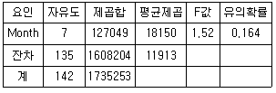
- 총 관측자료 수는 142이다.
- 요인은 Month로서 수준 수는 8개이다.
- 오차랑의 분산 추정값은 11913이다.
- 유의수준 0.⑤에서 인자의 효과가 인정되지 않는다.
(정답률: 51%)
79. 다음 사례에 알맞은 검정방법은?
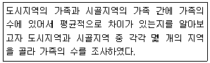
- 독립표본 t-검정
- 더빈 왓슨검정
- X2-검정
- F-검정
(정답률: 49%)
80. 다음 중 X의 확률분포가 대칭이 아닌 것은?
- 공정한 주사위 2개를 차례로 굴릴 때, 두 주사위에 나타난 눈의 합 X의 분포
- 공정한 동전 1개를 10회 던질 때, 앞면이 나타난 횟수 X의 분포
- 불량품이 5개 포함된 20개의 제품 중 임의로 3개의 제품을 구매하였을 때, 구매한 제품 중에 포함되어 있는 불량품의 개수 X의 분포
- 완치율이 50%인 약품으로 20명의 환자를 치료하였을 때 완치된 환자 수 X의 분포
(정답률: 58%)
81. 행변수가 M개의 범주를 갖고 열변수가 N개의 범주를 갖는 분할표에서 행변수와 열변수가 서로 독립인지를 검정하고자 한다. (i, j)셀의 관측도수를 Oij, 귀무가설 하에서의 기대도수의 추정치를
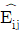
라 할 때, 이 검정을 위한 검정통계량은?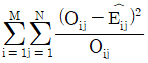
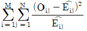
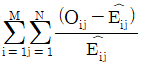
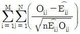
(정답률: 61%)
82. 어느 공공기관의 민원서비스 만족도에 대한 여론조사를 하기 위하여 적절한 표본크기를 결정하고자 한다. 95% 신뢰수준에서 모비율에 대한 추정오차의 한계가 ±4% 이내에 있게 하려면 표본크기는 최소 얼마가 되어야 하는가? (단, 표준화 정규분포에서 P(Z≥1.96)=0.025)
- 157명
- 601명
- 1201명
- 2401명
(정답률: 43%)
83. 다음과 같은 확률분포를 갖는 이산확률변수가 있다고 할 때 수학적 기댓값 E(X-1)(X-1]의 값은?
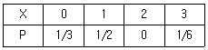
- 0.5
- 1
- 1.5
- 2
(정답률: 54%)
84. 3개 이상의 모집단의 모평균을 비교하는 통계적 방법으로 가장 적합한 것은?
- t-검정
- 회귀분석
- 분산분석
- 상관분석
(정답률: 57%)
85. 다음 자료는 A병원과 B병원에서 각각 6명의 환자를 상대로 하여 환자가 병원에 도착하여 진료서비스를 받기까지의 대기시간(단위:분)을 조사한 것이다. 두 병원의 진료서비스 대기시간에 대한 비료로 옳은 것은?
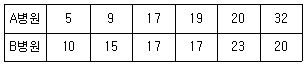
- A병원 평균=B병원 평균, A병원 분산＞B병원 분산
- A병원 평균=B병원 평균, A병원 분산＜B병원 분산
- A병원 평균＞B병원 평균, A병원 분산＜B병원 분산
- A병원 평균＜B병원 평균, A병원 분산＞B병원 분산
(정답률: 67%)
86. 단순회귀모형 yi=β0+β1xi+ϵi(i=1, 2,ㆍㆍㆍ,n)의 적합된 회귀식
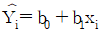
와 잔차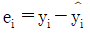
관계에서 성립하지 않는 것은? (단, ϵi~N(0, σ2)이다,)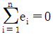
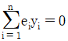
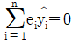
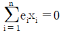
(정답률: 40%)
87. 어떤 학생이 통계학 시험에 합격할 확률은 2/3이고, 경제학 시험에 합격학 확률은 2/5이다. 또한 두과목 모두에 합격할 확률이 3/4이라면 적어도 한 과목에 합격할 확률은?
- 17/60
- 18/60
- 19/60
- 20/60
(정답률: 59%)
88. 5%의 불량제품이 만들어지는 공장에서 하루 만들어지는 제품 중에서 임의로 100개의 제품을 골랐다. 불량품 개수의 기댓값과 분산은 얼마인가?
- 기댓값:5, 분산:4.75
- 기댓값:10, 분산:4.65
- 기댓값:5, 분산:4.65
- 기댓값:10, 분산:4.75
(정답률: 64%)
89. 다음에 적합한 가설검정법과 검정통계량은?
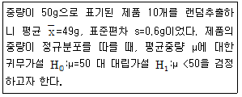
- 정규검정법,
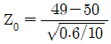
- 정규검정법,
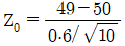
- t-검정법,
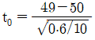
- t-검정법,
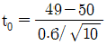
(정답률: 41%)
90. 다음 중 첨도가 가장 큰 분포는?
- 표준정규분포
- 자유도가 1인 t분포
- 평균=0, 표준편차=0.1인 정규분포
- 평균=0, 표준편차=5인 정규분포
(정답률: 33%)
91. 단순선형회귀모형 y=β0+β1x+ϵ을 고려하여 자료들로부터 다음과 같은 분산분석표를 얻었다. 이 때 결정계수는 얼마인가?
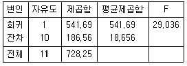
- 0.7
- 0.72
- 0.74
- 0.76
(정답률: 54%)
92. 특정 질문에 대해 응답자가 답해줄 확률은 0.5이며, 매 질문 시 답변 여부는 상호독립적으로 결정된다. 5명에게 질문하였을 경우, 3명이 답해줄 확률과 가장 가까운 값은?
- 0.50
- 0.31
- 0.60
- 0.81
(정답률: 48%)
93. 다음 중 중앙값과 동일한 측도는?
- 평균
- 최빈값
- 제2사분위수
- 제3사분위수
(정답률: 57%)
94. 봉급생활자의 근속년수, 학력, 성별이 연봉에 미치는 관계를 알아보고자 연봉을 반응변수로 하여 다중회귀분석을 실시하기로 하였다. 연봉과 근속년수는 양적변수이며, 학력(고졸이하, 대졸, 대학원이상)과 성별(남, 여)은 질적변수일 때, 중회귀모형에 포함되어야 할 가변수(dummy variable)의 수는?
- 1
- 2
- 3
- 4
(정답률: 37%)
95. 비대칭도(skewness)에 관한 설명으로 틀린 것은?
- 비대칭도의 값이 1이면 좌우대칭형인 분포를 나타낸다.
- 비대칭도의 부호는 관측값 분포의 긴 쪽 꼬리방향을 나타낸다.
- 비대칭도는 대칭성 혹은 비대칭성을 나타내는 측도이다.
- 비대칭도의 값이 음수이면 자료의 분포형태가 왼쪽으로 꼬리를 길게 늘어뜨린 모양을 나타낸다.
(정답률: 58%)
96. 국회위원 후보 A에 대한 청년층 지지율 p1과 노년층 지지율 p2의 차이 p1-p2는 6.6%로 알려져 있다. 청년층과 노년층 각각 500명씩 랜덤추출하여 조사하였더니, 위 지지율 차이는 3.3%로 나타났다. 지지율 차이가 줄어들었다고 할 수 있는지를 검정하기 위한 귀무가설 H0와 대립가설 H1은?
- H0:p1-p2=0.033, H1:p1-p2＞0.033
- H0:p1-p2＞0.033, H1:p1-p2≤0.033
- H0:p1-p2＜0.066, H1:p1-p2≥0.066
- H0:p1-p2=0.066, H1:p1-p2＜0.066
(정답률: 50%)
97. 단순회귀분석을 적용하여 자료를 분석하기 위해서 10쌍의 독립변수와 종속변수의 값들을 측정하여 정리한 결과 다음과 같은 값을 얻었다. 회귀모형 Yi=α+βxi+ϵ의 β의 최소제곱추정향을 구하면?
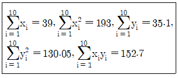
- 0.287
- 0.357
- 0.387
- 0.487
(정답률: 40%)
98. 평균이 μ이고 표준편차가 σ(＞0)인 정규분포 N(μ, σ2)에 대한 설명으로 틀린 것은?
- 정규분포 N(μ, σ2)은 평균 μ에 대하여 좌우대칭인 종 모양의 분포이다.
- 평균 μ의 변화는 단지 분포의 중심위치만 이동시킬 뿐 분포의 형태에는 변화를 주지 않는다.
- 표준편차 σ의 변화는 σ값이 커질수록 μ근처의 확률은 커지고 꼬리부분의 확률은 작아지는 모양으로 분포의 형태에 영향을 미친다.
- 확률변수 X가 정규분포 N(μ, σ2)을 따르면, 표준화된 확률변수 Z=(X-μ)/σ는 N(0, 1)을 따른다.
(정답률: 57%)
99. 중심극한정리에 대한 설명으로 옳은 것은?
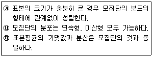
- ㉮
- ㉮, ㉯
- ㉯, ㉰
- ㉮, ㉯, ㉰
(정답률: 32%)
100. 표본의 수가 n이고 독립변수의 수가 k인 중회귀모형의 분산분석표에서 잔차제곱합 SSE의 자유도는?
- k
- k+1
- n-1
- n-k-1
(정답률: 60%)
도구효과(instrumentation)는 연구에 사용된 도구나 측정기구의 변화가 결과에 영향을 미치는 것이다. 예를 들어, 연구 중간에 사용된 측정기구의 정확도가 변화하면 결과에 영향을 미칠 수 있다.
시험효과(testing effect)는 연구 대상이 이전에 받은 시험 경험이 결과에 영향을 미치는 것이다. 예를 들어, 연구 대상이 이전에 같은 종류의 시험을 많이 보았다면, 이번에도 더 잘 볼 수 있을 가능성이 있다.
통계적 회귀(statistical regression)는 연구 대상의 극단적인 결과가 다음 측정에서는 평균적인 결과로 회귀하는 경향이 있는 것이다. 예를 들어, 첫 번째 측정에서 극단적으로 높은 점수를 받은 연구 대상이 다음 측정에서는 평균적인 점수를 받을 가능성이 높다.